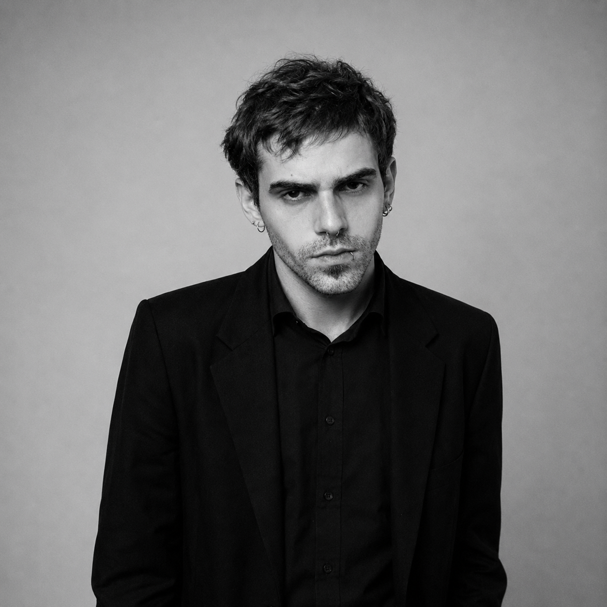

Portfólio · 2026
Motion Designer
Editor de Vídeo
Felipe Piccinato
Motion design e vídeo com estratégia. Vinhetas, comerciais, VSLs e conteúdo para redes que capturam a atenção, comunicam com clareza e sustentam a marca, com agilidade e acabamento profissional.
- +0
- anos de experiência
- +0
- clientes atendidos
- 0
- peças nesta seleção
01 Trabalhos
Uma seleção do que eu faço melhor.
Filtre por tipo de trabalho e clique numa peça para assistir e ver a ideia por trás dela. Setas do teclado navegam entre as peças.
HorizontalVídeos longos, vinhetas e comerciais
VerticalReels e vídeos para redes sociais

02 Sobre
Oi, eu sou o Felipe.
Crio vídeos com propósito para marcas que querem ser notadas.
Motion designer e editor de vídeo com mais de dez anos de atuação e formação em Rádio e Televisão. Minha trajetória passa por design gráfico, direção de arte e produção audiovisual, e hoje se concentra em motion design e edição para marcas, agências e veículos de comunicação.
Atuo do conceito à entrega: pesquiso, desenvolvo a ideia, produzo e finalizo peças como vinhetas, comerciais, VSLs e conteúdo para redes sociais. Integro inteligência artificial ao fluxo de produção para ganhar agilidade sem abrir mão de criatividade e acabamento.
Experiência
Projetos para rádios, escolas, comércio e agências, como Jovem Pan, Rádio Beira Mar, Colégio Planck e Poli-Pet
VSLs, conteúdo para Instagram e automações com IA
Vinhetas, ilustrações e vídeos para redes
Equipe de design, identidade visual e campanhas
Podcasts: gravação e edição
Ferramentas
03 Processo
Do briefing à entrega, um processo claro.
- 1
Briefing
Levantamento de objetivo, público e canal. Saber onde a peça vai rodar (TV, mídia indoor, redes sociais ou página de vendas) define formato, duração e linguagem.
- 2
Conceito
Pesquisa de referências, roteiro visual e definição da linha criativa. Cada decisão de cor, ritmo e tipografia parte de uma ideia central, e não do acaso.
- 3
Produção
Motion, edição e design com acabamento profissional. Ferramentas de IA automatizam as tarefas repetitivas e liberam tempo para o que diferencia a peça.
- 4
Entrega
Arquivos finalizados nos formatos de cada canal, dentro do prazo e prontos para publicar, com revisões objetivas e alinhadas desde o início.